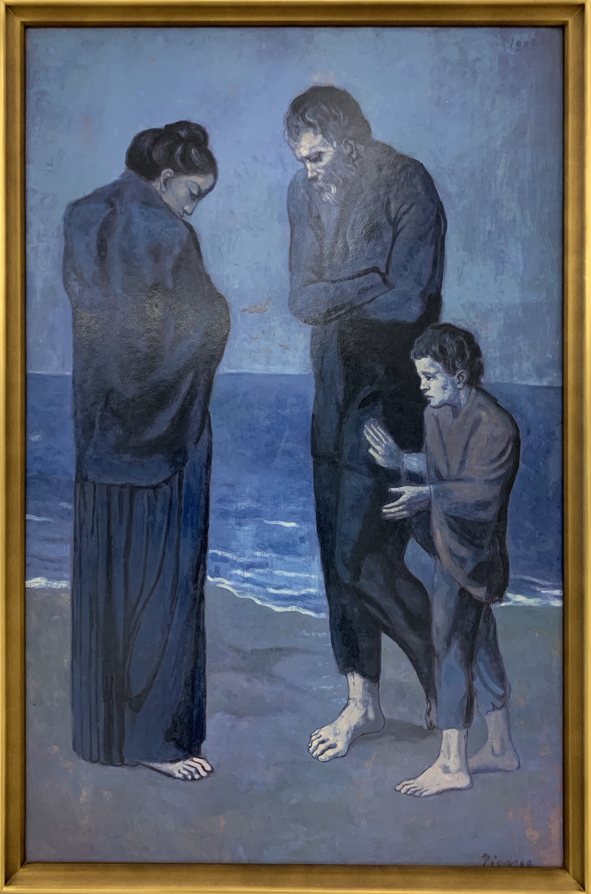

誰もが知る大画家、ピカソ。
本名が長いこともそうだが、何より残した作品の数が膨大である。
有名な作品「ゲルニカ」のようにまるで見ているものに直接訴えかけるメッセージ性の強いものから、
一見何を書いているのかと首を傾げてしまう抽象的なものまで幅広く書き残した。
残念ながらここでは一部になるが、ぜひピカソの作品をご覧いただきたい。
| 1881年 | スペインに生まれる |
|---|---|
| 1895年 | バルセロナに移住し、美術学校に入学 1ヶ月の猶予のある入学制作を、なんと1日（諸説あり）で完成させる |
| 1897年 | マドリードの王立サン・フェルナンド美術アカデミーに入学。しかし授業内容は古典的な内容で中退 |
| プラドの美術館に通い、ベラスケスらの名画を模写することで絵画の道を求めて行った | |
| 1899年 | バルセロナに戻る |
| 四匹の猫というカフェに通い、芸術家たちと関わりながら絵を描き、同年に個人初の個展を開催 | |
| 1900年 | 再びピカソの個展が開催され、約150点を展示 |
青の時代
大塚国際美術館にて撮影
『悲劇（海辺の貧しい家族）』
1901年 パリで個展を開く
19歳の時、親友が自殺したことに大きなショックを受け、
鬱屈とした心象を青を基調に使い、盲人、娼婦、乞食など
社会の底辺に生きる人々を題材にした作品群をかいた。
現在"青の時代"という言葉は、孤独で不安な青春時代を指す一般名詞のようになっている。
ばら色の時代

Photo by “Garçonàlapipe” - PD-US
『パイプを持つ少年』
1905年 薔薇色の時代が始まる（1904-1906年）
オリヴィエという恋人を得て、明るい色調でサーカスの芸人、
家族や兄弟、少女、少年などを描いた。

{kind=link}
| 1911年 | ルーヴル美術館からレオナルド・ダ・ヴィンチのモナリザが盗まれ、容疑者の一人として逮捕 証拠不十分のため1週間で釈放（のちに事件とは無関係だったことが証明される） |
|---|---|
| 1914年 | 第一次世界大戦 勃発 |
| 1936年 | 人民戦線政府の依頼によりプラド美術館長に就任 |
| この年の7月、スペイン内戦が勃発する |
1937年 ゲルニカ空爆

Photo by “Mural del Gernika” - PD-US
『ゲルニカ』
ナチスドイツがスペインのゲルニカを爆撃したことを非難する大作。
ちなみにこの原寸大のタペストリーが国連本部に飾られており、また同じものが他に2点存在する。
その中の一枚が、なんと日本の群馬県の群馬県立近代美術館に所蔵されている。
これに関して、ぜひ原田マハ氏の「暗幕のゲルニカ」を読んでいただきたい。
ハラハラとした展開、胸を熱くする物語に、ピカソを何十倍も好きになること間違いなしである。
| 1964年 | 日本、カナダで回顧展 |
|---|---|
| 1970年 | バルセロナにピカソ美術館開館 |
| 1973年 | 肺水腫により死去。享年91歳だった |